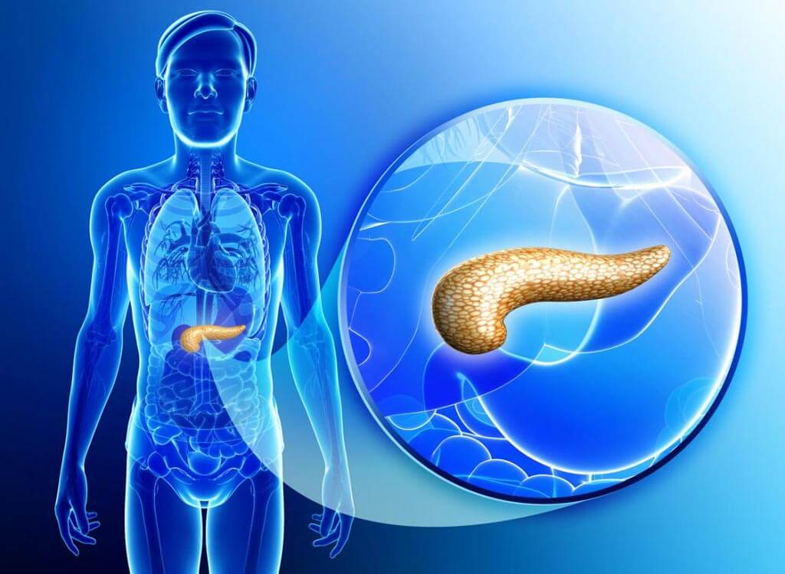

Mi opinión sobre el páncreas
El páncreas desempeña un papel crucial en la regulación del metabolismo y la digestión. Su función endocrina, al producir insulina y glucagón, es vital para mantener niveles adecuados de azúcar en la sangre y prevenir la diabetes. Además, su función exocrina, al secretar enzimas digestivas, contribuye a la descomposición y absorción de los alimentos. Un páncreas saludable es fundamental para mantener una buena salud en general. En resumen ya que el páncreas es un órgano que es importante como todos los demás por eso hay que cuidarlo y hidratarse bien para no malograrlo, aparte de seguir todas las medidas de prevencion.
